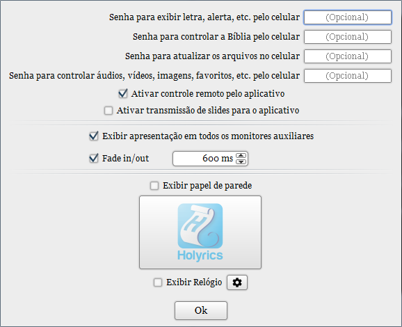

Senhas: Cadastrar as senhas para os diferentes tipos de acesso ao programa.
Ativar controle remoto: aparelhos com aplicativo Holyrics instalado podem acessar e controlar o programa.
Ativar transmissão: aparelhos com aplicativo Holyrics instalado podem receber a imagem sendo apresentada no telão atualmente pelo computador.
Exibir apresentação em todos os monitores auxiliares: se dois ou mais monitores auxiliares estiverem conectados ao computador e esta opção estiver desmarcada, APENAS UM monitor auxiliar será utilizado pelo programa.
Fade in/out: efeito de esmaecimento ao iniciar ou encerrar uma apresentação.
Exibir papel de parede: deixar um papel de parede sendo exibido nos monitores auxiliares enquanto não são utilizados.
Exibir relógio: exibe um relógio na tela quando não tiver uma apresentação sendo exibida.
